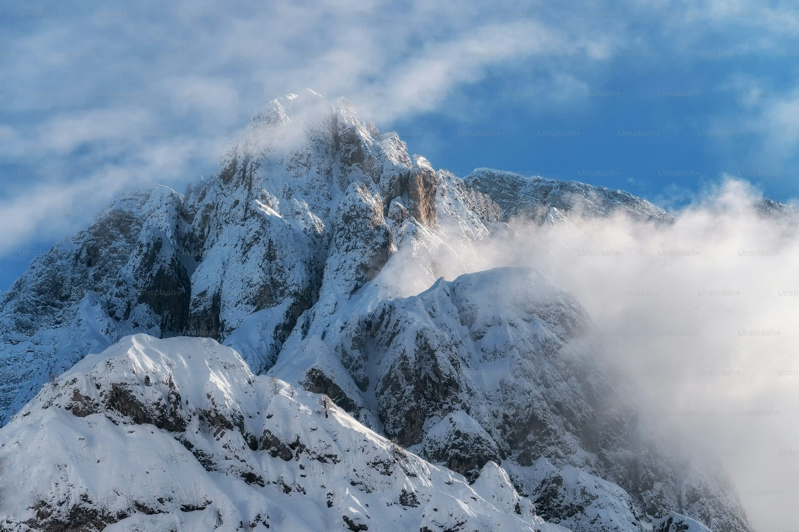

Wanderlust Journeys
Journey Time
About Us 🌍✈️ :
At Journey Time, we specialize in curating unforgettable travel experiences across some of India's most
iconic destinations, including the sun-kissed beaches of Goa, the cool serenity of Shimla, and the
breathtaking mountain views of Manali. Whether you're after relaxation, adventure, or a little bit of
both, we offer tailor-made tours that suit every traveler’s needs.
Our mission is simple: to provide seamless, hassle-free travel experiences that allow you to relax,
explore, and create lasting memories. With carefully crafted itineraries, comfortable transport, expert
guides, and attention to every detail, Journey Time ensures your trip is filled with adventure, beauty,
and joy.
Join us to explore the diverse landscapes, rich culture, and vibrant histories of these spectacular
destinations. Let us handle
the details so you can focus on enjoying the journey!
1.Dehradun
: Discover Dehradun’s Hidden Gems 🌄✨
Dehradun, a picturesque city nestled in the foothills of the Himalayas, is a perfect getaway for
every kind of traveler. Known for its serene landscapes, it offers a perfect mix of nature,
adventure, and relaxation. During the summer, the cool weather and scenic views make it an ideal
destination. Nature lovers can explore lush forests, tranquil lakes, and breathtaking hills.
For adventure enthusiasts, Dehradun offers exciting activities like trekking, rafting, and caving,
particularly at places like Robber’s Cave. Spiritual seekers can find peace in nearby destinations
like Rishikesh and Haridwar, where the sacred river Ganges flows. Those looking to unwind can enjoy
relaxing moments at serene spots like Sahastradhara or T Lachhiwala Picnic Spot.
Wildlife lovers can explore the Dehradun Zoo and Malsi Deer Park for an up-close encounter with
nature. Whether you're exploring historical landmarks, hiking through scenic trails, or meditating
by the river, Dehradun offers a memorable experience for all kinds of travelers.
1. Sahastradhara 💦: A serene spot known for its sulphur springs and breathtaking landscapes,
perfect
for
relaxation and rejuvenation.
1. Robber’s Cave 🏞️: An intriguing natural cave surrounded by stunning hills, where you can
enjoy a
thrilling adventure and a splash in the cool waters.
3. Rishikesh 🕉️: A spiritual haven on the banks of the Ganges, ideal for yoga, meditation, and
thrilling
white-water rafting adventures.
4. Haridwar 🛕: A sacred city with rich cultural heritage, where you can witness the mesmerizing
Ganga
Aarti on the ghats.
5. Dehradun Zoo 🦁: A delightful spot to connect with wildlife and see a variety of animals in
their
natural habitat.
6. T Lachhiwala Picnic Spot 🍃: A peaceful escape surrounded by lush greenery, perfect for
family
picnics,
nature walks, and relaxing by the river.
7.Malsi Deer Park 🦌: A charming wildlife park where you can catch sight of graceful deer and
other
native
animals in a lush, green environment.
relaxation and rejuvenation.
1. Robber’s Cave 🏞️: An intriguing natural cave surrounded by stunning hills, where you can enjoy a
thrilling adventure and a splash in the cool waters.
3. Rishikesh 🕉️: A spiritual haven on the banks of the Ganges, ideal for yoga, meditation, and
thrilling white-water rafting adventures.
4. Haridwar 🛕: A sacred city with rich cultural heritage, where you can witness the mesmerizing Ganga
Aarti on the ghats.
5. Dehradun Zoo 🦁: A delightful spot to connect with wildlife and see a variety of animals in their
natural habitat.
6. T Lachhiwala Picnic Spot 🍃: A peaceful escape surrounded by lush greenery, perfect for family
picnics, nature walks, and relaxing by the river.
7.Malsi Deer Park 🦌: A charming wildlife park where you can catch sight of graceful deer and other
native animals in a lush, green environment.
Dehradun, nestled in the foothills of the Himalayas, offers a perfect blend of nature, adventure,
and spirituality. The serene Sahastradhara is famous for its sulphur springs, providing a
rejuvenating experience for visitors. For thrill-seekers, Robber’s Cave offers a unique cave
exploration and a refreshing dip in cool waters. Spiritual seekers can visit Rishikesh, known for
yoga, meditation, and exciting white-water rafting adventures. Similarly, Haridwar offers a divine
atmosphere with the mesmerizing Ganga Aarti at the ghats.
For nature lovers, Dehradun Zoo showcases a variety of animals in a lush, green setting, while Malsi
Deer Park allows visitors to witness graceful deer and other native species in their natural
habitat. If you’re looking to unwind, T Lachhiwala Picnic Spot provides a peaceful escape surrounded
by nature, ideal for picnics and leisurely walks. Whether you are seeking adventure, relaxation, or
spiritual growth, Dehradun caters to every traveler’s desires, making it a must-visit destination.
click here to know more
2.Goa
: Best Day Trip Adventures in Goa 🌴🌞
Goa is not just about its beautiful beaches—it's also packed with thrilling day trip options perfect
for groups! Whether you're seeking adventure, culture, or a unique way to explore the stunning
landscapes, Goa has something for everyone. For the adventurous, trekking to the majestic Dudhsagar
Waterfalls or enjoying water sports at Baga Beach will surely get your adrenaline pumping. If you're
a history buff, a visit to the UNESCO-listed churches of Old Goa offers a cultural experience that’s
hard to forget. For nature lovers, a visit to the spice plantations or a peaceful birdwatching
session at the Salim Ali Bird Sanctuary is the perfect way to spend the day.
If you're looking for relaxation, the quiet beaches of South Goa, such as Palolem and Agonda,
provide a tranquil escape. Group activities like a river cruise on the Mandovi or a kayak ride
through Goa’s backwaters offer unique experiences to enjoy together. The vibrant Anjuna Flea Market
is perfect for shopping, while a visit to Fort Aguada or Cabo de Rama Fort lets you explore Goa’s
rich history and enjoy stunning views. Whether you're seeking thrills or simply want to unwind,
Goa's diverse day trip options ensure a memorable experience for everyone.
1. Konkan Explorers 🚤: Get ready for a fun-filled day with water sports, river cruises, and
scenic
coastal
exploration. Perfect for thrill-seekers and nature lovers alike!
2. Flying Fish 🐟: A perfect choice for those who want to experience the thrill of parasailing,
water
sports, and cruising along Goa's pristine coastline. A day filled with excitement and
relaxation!
3. BLive Electric Bike Tours 🚲⚡: Explore Goa in an eco-friendly way! Hop on an electric bike
and
discover
the beauty of Goa’s heritage, beaches, and vibrant culture with a guided tour.
4. Make It Happen 🌟: For those who want a custom-made day trip, this tour company offers a
variety
of
experiences, from exploring historic sites to indulging in beachside fun. You dream it, they
make it
happen!
5. Five Senses Tours 🌺🧘♂️: Perfect for groups seeking a peaceful and enriching day trip.
These
tours
offer a mix of culture, nature, and mindfulness to awaken all five senses in Goa's tranquil
environment.
coastal exploration. Perfect for thrill-seekers and nature lovers alike!
2. Flying Fish 🐟: A perfect choice for those who want to experience the thrill of parasailing, water
sports, and cruising along Goa's pristine coastline. A day filled with excitement and relaxation!
3. BLive Electric Bike Tours 🚲⚡: Explore Goa in an eco-friendly way! Hop on an electric bike and discover
the beauty of Goa’s heritage, beaches, and vibrant culture with a guided tour.
4. Make It Happen 🌟: For those who want a custom-made day trip, this tour company offers a variety of
experiences, from exploring historic sites to indulging in beachside fun. You dream it, they make it
happen!
5. Five Senses Tours 🌺🧘♂️: Perfect for groups seeking a peaceful and enriching day trip. These tours
offer a mix of culture, nature, and mindfulness to awaken all five senses in Goa's tranquil
environment.
-: Goa is not just about its beautiful beaches; it offers a wide range of thrilling and memorable
day trip options, perfect for groups of all interests. For adventure seekers, a trek to Dudhsagar
Waterfalls offers a chance to experience one of India’s tallest waterfalls, surrounded by lush
greenery. Baga Beach is ideal for those craving adrenaline, with activities like parasailing, jet
skiing, and windsurfing on offer.
If you prefer something more relaxed, the quiet beaches of
South Goa, such as Palolem and Agonda, provide an escape with their tranquil ambiance and serene
waters.
For those interested in history and culture, a visit to Old Goa is a must. The UNESCO-listed
churches, like the Basilica of Bom Jesus, are perfect for exploring Goa’s colonial past.
You can
also immerse yourself in nature by visiting the Salim Ali Bird Sanctuary on Chorao Island, where
birdwatching enthusiasts can spot a variety of species. Spice plantation tours are another great way
to experience the lush green landscapes and learn about the local spice cultivation.
For a unique and peaceful experience, try a river cruise on the Mandovi River, where you can enjoy
stunning views of the river and its surroundings while relaxing. A trip to Fort Aguada offers
panoramic views of the Arabian Sea and an opportunity to explore Goa’s colonial fortifications.
Additionally, kayaking through Goa's backwaters provides an opportunity to enjoy the serene
environment in a more intimate and adventurous way. With so many options to choose from, Goa ensures
an unforgettable day trip experience for every type of traveler.
Click
to know more
3.Manali
: Top Attractions to Visit in Manali 🏔️✨
Manali, a beautiful hill station in Himachal Pradesh, offers an enchanting mix of natural beauty,
adventure, and spirituality, making it a perfect getaway for all kinds of travelers. Surrounded by
snow-capped peaks, lush valleys, and cascading rivers, Manali is a paradise for nature lovers. The
Solang Valley, known for its panoramic views and adventure activities, is ideal for skiing in winter
and paragliding in the summer. For those seeking peace, the Hidimba Devi Temple, set amidst a cedar
forest, offers a serene and spiritual experience.
Rohtang Pass, one of the highest motorable roads in the world, is a must-visit, offering
breathtaking views and snow activities like snowboarding and skiing. Old Manali, with its rustic
charm and quiet vibe, is perfect for relaxation, offering scenic views and cozy cafes. Manu Temple,
dedicated to the sage Manu, offers a glimpse of the region’s spiritual history.
For adventure seekers, Trekking in the Great Himalayan National Park is a thrilling experience, with
diverse flora and fauna. The Beas River is a hotspot for white-water rafting, adding a rush of
adrenaline to your visit. Vashisht Hot Springs provides a rejuvenating soak in natural hot springs,
which is said to have healing properties. If you’re looking for panoramic views, the Jogini
Waterfall offers a beautiful spot to enjoy nature’s beauty.
Whether you’re trekking, seeking spiritual solace, or simply relaxing amidst nature, Manali has it
all. With its diverse landscapes and activities, it’s a destination that promises a unique and
unforgettable experience.
1. Solang Valley 🏞️: Known for its stunning views and thrilling adventure sports like
paragliding,
skiing,
and zorbing, Solang Valley is a paradise for adventure lovers!
2. Beas River 🌊: Flowing through the heart of Manali, the Beas River offers a peaceful
retreat
with
scenic
views, perfect for a relaxing riverside walk or enjoying a quiet picnic.
3.
Manikaran Gurudwara 🕌: A sacred site for pilgrims, Manikaran Gurudwara is famous for its
hot
springs
and spiritual vibe, offering both serenity and the chance to experience the local culture.
4. Jogini Waterfall 💦: A beautiful and serene waterfall located near Vashisht Village,
Jogini
Waterfall is
perfect for a short trek and offers a refreshing escape into nature.
5. T Hidimba Devi Temple 🛕: A unique and historic temple surrounded by lush forests, this
is a must-visit
for its tranquil atmosphere, beautiful architecture, and the fascinating
legends
surrounding it.
-:Manali, a picturesque hill station in Himachal Pradesh, is known for its stunning natural
beauty, adventure activities, and spiritual experiences. Solang Valley, a popular spot, offers
thrilling activities like skiing, paragliding, and zorbing, with mesmerizing views of
snow-capped mountains. Rohtang Pass, one of the highest motorable roads, is a must-visit,
offering breathtaking panoramic views and a chance to enjoy snow activities.
The Hidimba Devi Temple, surrounded by dense cedar forests, provides a peaceful spiritual
retreat, while Manu Temple offers insight into the region’s spiritual heritage. For those
seeking adventure, trekking in the Great Himalayan National Park is an unforgettable experience,
with diverse flora and fauna. Vashisht Hot Springs offers a relaxing soak in natural hot
springs, known for their
therapeutic properties.
The Beas River is perfect for thrilling white-water rafting, while Jogini Waterfall provides a
serene escape with its natural beauty. Old Manali, with its laid-back vibe, is ideal for
relaxation, featuring charming cafes and scenic views. Manali truly offers something for
everyone, whether it’s adventure, spirituality, or tranquility.
Click
to know more
4.Shimla
-
1. Solang Valley 🏞️: Known for its stunning views and thrilling adventure sports like
paragliding,
skiing,
and zorbing, Solang Valley is a paradise for adventure lovers!
2. Beas River 🌊: Flowing through the heart of Manali, the Beas River offers a peaceful retreat with
scenic
views, perfect for a relaxing riverside walk or enjoying a quiet picnic.
3. Manikaran Gurudwara 🕌: A sacred site for pilgrims, Manikaran Gurudwara is famous for its hot
springs and spiritual vibe, offering both serenity and the chance to experience the local culture.
4. Jogini Waterfall 💦: A beautiful and serene waterfall located near Vashisht Village, Jogini
Waterfall is perfect for a short trek and offers a refreshing escape into nature.
5. T Hidimba Devi Temple 🛕: A unique and historic temple surrounded by lush forests, this is a must-visit
for its tranquil atmosphere, beautiful architecture, and the fascinating legends surrounding it.
The Hidimba Devi Temple, surrounded by dense cedar forests, provides a peaceful spiritual retreat, while Manu Temple offers insight into the region’s spiritual heritage. For those seeking adventure, trekking in the Great Himalayan National Park is an unforgettable experience, with diverse flora and fauna. Vashisht Hot Springs offers a relaxing soak in natural hot springs, known for their
therapeutic properties.
The Beas River is perfect for thrilling white-water rafting, while Jogini Waterfall provides a serene escape with its natural beauty. Old Manali, with its laid-back vibe, is ideal for relaxation, featuring charming cafes and scenic views. Manali truly offers something for everyone, whether it’s adventure, spirituality, or tranquility.
Click to know more
4.Shimla
: Top Things to Do in Shimla with Children 🏞️👨👩👧👦
Shimla, with its cool climate and breathtaking scenery, is an ideal destination for family
trips, offering a perfect blend of natural beauty and fun activities for all ages. One of the
most popular attractions is The Ridge, a large open space offering stunning views of the
surrounding mountains. It’s a great spot for a family stroll, with many cafes and shops around
for a relaxed day out. Jakhoo Temple, located on the highest peak of Shimla, provides a unique
spiritual experience with a giant statue of Lord Hanuman, along with panoramic views of the
city.
For families with young children, the Shimla Heritage Walk is a delightful way to explore the
city’s colonial charm and history. The Kali Bari Temple and its beautiful surroundings provide a
peaceful retreat for those looking to enjoy Shimla’s tranquility. The Shimla State Museum offers
an educational experience, showcasing the region’s rich history, culture, and art.
Kufri, located just outside Shimla, is a popular destination for adventure activities like
go-karting, skiing, and snowboarding in winter, making it perfect for an exciting family day.
Christ Church, one of the oldest churches in North India, offers a chance to enjoy its
historical architecture and peaceful ambiance. For a bit of fun, Mall Road is lined with
shopping stalls, restaurants, and activities for kids, providing a great way to spend time as a
family.
1. Annandale Ground 🏃♀️🏏: A charming spot for picnics, outdoor games, and a relaxed day
out.
The
kids will love the open space, and you can enjoy a family-friendly atmosphere surrounded by
nature.
2. Indian Institute of Advanced Study 🏛️: Explore the rich history and stunning
architecture of
this
iconic building. It’s a great opportunity to introduce children to India’s history and
culture
in a
fascinating and educational way.
3. Jakhu Temple 🛕🐒: Visit the famous Jakhu Temple, perched atop a hill. It’s a fun trek
for
children
(watch out for the playful monkeys!) and offers beautiful views of Shimla. It’s both a
spiritual
and
adventurous experience!
4. The Ridge 🌄: A bustling open space in the heart of Shimla, perfect for family walks,
shopping,
and
enjoying local treats. The kids will enjoy the lively atmosphere, and the whole family can
soak
in
the majestic mountain views.
5. The Mall 🛍️🍦: The Mall Road is a must-visit for families! With shopping, local snacks,
and
plenty
of fun activities, it’s a great spot to spend time together and make some happy memories.
kids will love the open space, and you can enjoy a family-friendly atmosphere surrounded by nature.
2. Indian Institute of Advanced Study 🏛️: Explore the rich history and stunning architecture of this
iconic building. It’s a great opportunity to introduce children to India’s history and culture in a
fascinating and educational way.
3. Jakhu Temple 🛕🐒: Visit the famous Jakhu Temple, perched atop a hill. It’s a fun trek for children
(watch out for the playful monkeys!) and offers beautiful views of Shimla. It’s both a spiritual and
adventurous experience!
4. The Ridge 🌄: A bustling open space in the heart of Shimla, perfect for family walks, shopping, and
enjoying local treats. The kids will enjoy the lively atmosphere, and the whole family can soak in
the majestic mountain views.
5. The Mall 🛍️🍦: The Mall Road is a must-visit for families! With shopping, local snacks, and plenty
of fun activities, it’s a great spot to spend time together and make some happy memories.
-:Shimla, with its cool climate and scenic beauty, is a perfect destination for family trips. The Ridge offers stunning views and a great place for a family walk. Jakhoo Temple, with its giant Lord Hanuman statue, provides a spiritual experience with panoramic views. For adventure, Kufri offers activities like skiing, go-karting, and snowboarding, making it ideal for families. Shimla Heritage Walk lets you explore the city’s colonial charm, while Christ Church provides historical insights.
Families can enjoy a visit to the Shimla State Museum for a cultural experience. Mall Road is perfect for shopping and dining, with plenty of kid-friendly activities. For nature lovers, The Himalayan Bird Park offers a chance to see local wildlife. Annandale Ground is great for picnics and outdoor games. Shimla promises an unforgettable experience for families, with a mix of relaxation, adventure, and culture.
click
to know more
About us Contact us: support@WorldTour.in Terms of use Refund And Cancellation Policy Privacy Policy